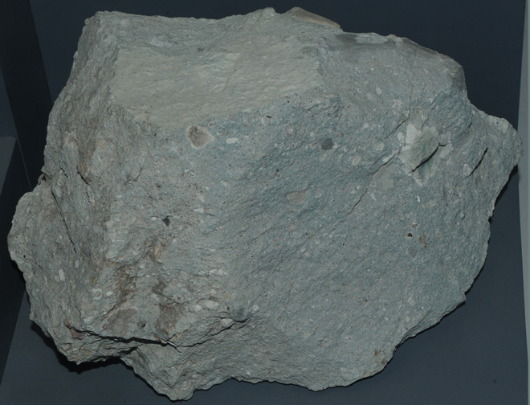

Kimberlite
Kimberlite is not a specific mineral. It is rather a type of potassium-rich volcanic rock best known for sometimes containing diamonds. "It is named after the town of Kimberley in South Africa, where the discovery of an 83.5-carat (16.7 g) diamond in 1871 spawned a diamond rush, eventually creating the Big Hole.
Kimberlite occurs in the Earth's crust in vertical structures known as kimberlite pipes. Kimberlite pipes are the most important source of mined diamonds today." (Wikipedia)
|

|
This sample of kimberlite is displayed in the Smithsonian Museum of Natural History.
This sample of kimberlite is about 25 cm across and is from Murfreesboro, Arkansas.
|
Mindat: Kimberlite
Wiki Kimberlite
|
Index |